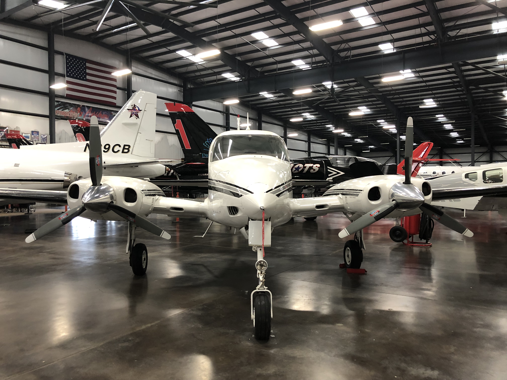

I have had the opportunity to network with many experts in the business while enrolled in the Dublin Engineering Design Program. I was able to learn a lot about different engineering career pathways through interesting guest speaker sessions and field trips. These interactions gave direct insights into the variety of opportunities accessible. Each interaction I had enhanced my knowledge of how engineering ideas are used in the real world, from mechanical engineering to useful practical advice. It also made me want to learn more about other professions. I want to use this job exploration page to showcase the wide range of employment options I've looked into and to record and consider the insights I've learned from these encounters.
During the summer of 2023, I had the privilege of attending a Drone Programming and Engineering Camp at a local community college. Our team faced a challenging task: designing and constructing a robust frame for our drone. But that was only half of the equation—we also needed to program the drone to navigate through intricate obstacle courses. This endeavor allowed me to apply my skills in design, teamwork, and programming. As we meticulously fine-tuned our creation, I experienced the thrill of creativity and the satisfaction of overcoming practical challenges. Our drone gracefully maneuvered through the courses, a testament to our collective effort.
In the spring of 2024, I got to go on a field trip to the amazing Patriot Jet Team Foundation. I learned about aerodynamics, the technical term for how things fly, from the presenters, as well as a special presentation from Mr. Dalibor from EXLABS. Everything from turbo engines to wing designs was optimized for performance and balance. Staff members I spoke with revealed information on materials, stress, and safety. It turns out that creating a jet requires more than simply speed—it also requires science and clever design. When I went back to class in our kinematics unit, I understood everything, from fluid dynamics to structural integrity. The best part was seeing theory come alive. I could finally see lift and drag affecting the real world.

Image Source: Jash Dadia's Camera
In the fall of 2023, I visited the Livermore Water Treatment Plant. I learned about the engineering process of water treatment, from the design of the plant to the machines involved in cleaning the water. I was also able to learn about the importance of safety and efficiency in the water treatment industry. I was able to apply my knowledge of chemistry to understand the chemical reactions taking place in order to remove toxins from the water. I noticed that every pipe, valve, and filter had a purpose, which was mainly efficiency. I learned how thoughtful placement and accurate design minimized energy consumption, and maximized the purity of water.
{kind=link}